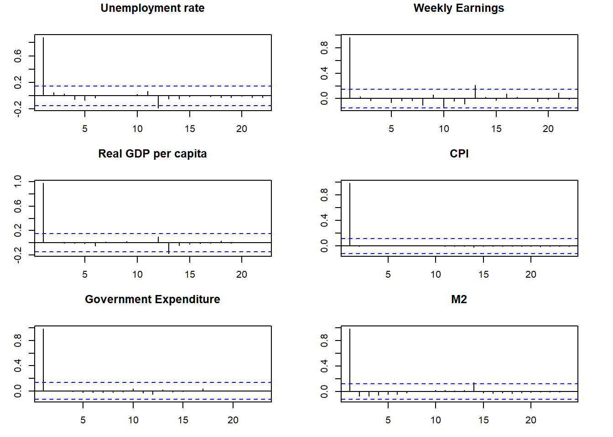

The Effects of Increased Unemployment Benefits and Stimulus Checks on the US Economy
Abstract.
Keywords. svars, impulse responses, quarto, R, monetary policy
Objective and Motivation
The goal of this research project is to analyze the impact of unconditional government stipends on the U.S. economy, such as stimulus checks. To identify these effects I will analyze the effects of the stimulus checks and increased unemployment benefits issued by the US government in the wake of the COVID-19 pandemic.
This is an important topic as inequality rises direct government action may become increasingly necessary. Increased taxation on the rich and targeted government programs can only do so much to help those at the lower and middle ends of income. Especially as the groups in need of help become larger and their needs more diverse, the high administrative costs of judging who gets the benefits and what they are applicable to may become untenable. In this case, regular stimulus payments or higher unemployment benefits may become necessary to the continued economic health of the country. However, without knowing the effects of these methods, it is difficult to say whether or not they would do more harm than good.
Data
For the purpose of this analysis data the United States Federal Reserve will be utilized. This source uses government data and is considered highly reliable. A potential issue is the information available being limited by the frequency with which the government collects data. To counter this, the estimates will use a long history and quarterly data which is the most frequent commonly available data.
The core factors chosen, median income, gdp per capita, and unemployment, were chosen for widely being considered to be strong indicators of economic health. An estimated four lags are used as this is quarterly data so by incorporating four lags seasonal effects are adequately accounted for.
Real GDP Per Capita, Quarterly: https://fred.stlouisfed.org/series/A939RX0Q048SBEA
Unemployment Rate, Monthly: https://fred.stlouisfed.org/series/UNRATE
Median Usual Weekly Real Earnings: https://fred.stlouisfed.org/series/LES1252881600Q
Consumer Price Index, Less Food and Energy: https://fred.stlouisfed.org/series/CPILFESL
Real Government Consumption Expenditures: https://fred.stlouisfed.org/series/A955RX1Q020SBEA
M2 Real Money Supply: https://fred.stlouisfed.org/series/M2REAL
Median income is chosen over average income as, due to income disparity in the united states, there are large distortions in the average compared to the median. As stimulus payments and increased unemployment benefits are likely to more significantly impact lower income individuals it was determined that the median income would prove more suitable.
GDP per capita is selected as it accounts for fluctuations in population over time instead of including effects that could be simple shifts in total population.
Unemployment is utilized at it is of paramount concern in either confirming or assuaging concerns that, with relatively less incentive to work, that a portion of the population will elect not to work.
CPI will reflect the changes in price level as a result of subsidies. Prices of food and energy are ignored as there are a large number of confounding factors which may distort data but are usually short term shocks as opposed to more systemic changes. For example, eggs fluctuated wildly in price in the United States for several months in early 2023 due solely to the conditions of the egg market and not due to any outside effects. For more durable goods it is expected that the changes in price level will be due largely due to more systemic shifts than short-term changes.
Real government consumption will certainly rise, at least short term, when income rises as a result of the increase in income being due to government subsidy. Of interest is signs of potential decrease in government expenditure in other sectors due to rising incomes, or if no such signs appear.
M2 money supply is included as contraction or expansion of the money supply can serve as an indicator for several other variables such as investment, interest rates, and spending.
All values except unemployment rate are taken as first differences to make them a stationary series. Unemployment rate is already stationary and as such does not require transformation. Both the non-stationary and the stationary series will be shown.
Preliminary Data Analysis
ADF Tests
#plot autocorrelation functions
par(mfrow=c(3,2),mar=c(3,3,3,3))
acf(urate[,2],main="Unemployment rate")
acf(mearn[,2],main="Weekly Earnings")
acf(rgdpcap[,2],main="Real GDP per capita")
acf(CPI[,2],main="CPI")
acf(govex[,2],main="Government Expenditure")
acf(M2[,2],main="M2")
ADF Tests
#plot PACF
pacf(urate[,2],main="Unemployment rate")
pacf(mearn[,2],main="Weekly Earnings")
pacf(rgdpcap[,2],main="Real GDP per capita")
pacf(CPI[,2],main="CPI")
pacf(govex[,2],main="Government Expenditure")
pacf(M2[,2],main="M2")
ADF Tests
par(mfrow=c(1,1),mar=c(5, 4, 4, 2)) #reset default values
#ADF testing
#See if there is a way to make ADF tests prettier
library(tseries)
data=cbind(urate[,2],mearn[1:176,2],rgdpcap[1:176,2],CPI[1:176,2],govex[1:176,2],M2[1:176,2])
adf <- as.data.frame(matrix(nrow=6,ncol=3,NA))
rownames(adf) <- colnames(data[1:6])
colnames(adf) <- c("Dickey-Fuller","Lag-order", "p-value")
for (i in 1:ncol(data)){
adf_tmp <- adf.test(data[,i],k=4)
adf[i,"Dickey-Fuller"] <- round(as.numeric(adf_tmp[1]),3)
adf[i,"Lag-order"] <- as.numeric(adf_tmp[2])
adf[i,"p-value"] <- round(as.numeric(adf_tmp[4]),3)
}
adf.diff <- as.data.frame(matrix(nrow=6,ncol=3,NA))
rownames(adf.diff) <- colnames(data[1:6])
colnames(adf.diff) <- c("Dickey-Fuller diff","Lag-order diff", "p-value diff")
for (i in 1: ncol(data)){
tmp.diff <- adf.test(diff(data[,i]),k=3)
adf.diff[i,"Dickey-Fuller diff"] <- round(as.numeric(tmp.diff[1]),3)
adf.diff[i,"Lag-order diff"] <- as.numeric(tmp.diff[2])
adf.diff[i,"p-value diff"] <- round(as.numeric(tmp.diff[4]),3)
}
knitr::kable(cbind(adf, adf.diff), index=TRUE)| Dickey-Fuller | Lag-order | p-value | Dickey-Fuller diff | Lag-order diff | p-value diff | |
|---|---|---|---|---|---|---|
| Unemployment Rate % | -3.059 | 4 | 0.134 | -6.650 | 3 | 0.010 |
| Weekly Earnings | -2.867 | 4 | 0.214 | -6.462 | 3 | 0.010 |
| Real GDP Per Capita | -2.394 | 4 | 0.412 | -7.077 | 3 | 0.010 |
| CPI | -2.611 | 4 | 0.321 | -2.513 | 3 | 0.362 |
| GovSpend in Billions | -2.348 | 4 | 0.431 | -3.459 | 3 | 0.048 |
| M2 Money Supply | -2.532 | 4 | 0.354 | -4.271 | 3 | 0.010 |
ADF Tests
# tseries::adf.test(as.vector(urate$`Unemployment Rate %`), k = 4)
# tseries::adf.test(as.vector(mearn$`Weekly Earnings`), k = 4)
# tseries::adf.test(as.vector(rgdpcap$`Real GDP Per Capita`), k = 4)
# tseries::adf.test(as.vector(CPI$CPI), k = 4)
# tseries::adf.test(as.vector(govex$`GovSpend in Billions`), k = 4)
# tseries::adf.test(as.vector(M2$`M2 Money Supply`), k = 4)
#
# #For all reject unit root stationarity
#
# tseries::adf.test(diff(as.vector(urate$`Unemployment Rate %`), k = 3))
# tseries::adf.test(diff(as.vector(mearn$`Weekly Earnings`), k = 3))
# tseries::adf.test(diff(as.vector(rgdpcap$`Real GDP Per Capita`), k = 3))
# tseries::adf.test(diff(as.vector(CPI$CPI), k = 3))
# tseries::adf.test(diff(as.vector(govex$`GovSpend in Billions`), k = 3))
# tseries::adf.test(diff(as.vector(M2$`M2 Money Supply`), k = 3))All of the variables of interest show a gradually decaying ACF and no significant PACF. This is consistent with variables that have a strong dependence on prior observed values and no significant dependence on the error of the prior observations. This indicates that an AR model is indeed useful for predicting the behavior of these variables.
The ADF tests indicate that all of the processes are unit root non-stationary. This is consistent with expectations as all of the variables visually exhibit a strong upward trend. Unemployment rate being non-stationary is something of a surprise, but it has the smallest p-value at 0.1337. On visual inspection it can be seen that, barring the COVID shock, unemployment rate has been cyclical but downward trending.
First Differences shown below.
First-Differenced Plots
#Take first differences
#It's making me select an end point if I want to use not all of column 1
n = nrow(mearn)
mearn = cbind(mearn[2:n,1] ,diff(mearn$`Weekly Earnings`))
#colname since its renaming and being annoying
colnames(mearn) = c("Date", "Weekly Earnings")
n = nrow(rgdpcap)
rgdpcap = cbind(rgdpcap[2:n,1], diff(rgdpcap$`Real GDP Per Capita`))
colnames(rgdpcap) = c("Date", "Real GDP Per Capita")
n = nrow(CPI)
CPI = cbind(CPI[2:n,1],diff(CPI$CPI))
colnames(CPI) = c("Date", "CPI")
n = nrow(govex)
govex2 = cbind(govex[2:n,1],diff(govex$`GovSpend in Billions`))
colnames(govex) = c("Date", "GovSpend in Billions")
n = nrow(M2)
M2 = cbind(M2[2:n,1],diff(M2$`M2 Money Supply`))
colnames(M2) = c("Date", "M2 Money Supply")
#visually demonstrate values
par(mfrow=c(3,2),mar=c(3,3,3,3))
plot(urate$Date, urate$`Unemployment Rate %`, type = "l", lwd = 2,
main = "US Unemployment Rate Over Time", xlab = "Year/Quarter",
ylab = "Unemployment %", col = "blue")
plot(mearn$`Date` ,mearn$`Weekly Earnings` , type = "l", lwd = 2,
main = "US Median Weekly Earnings (2020 Dollars) First Difference", xlab = "Year/Quarter",
ylab = "Weekly Earnings in $", col = "blue")
plot(rgdpcap$Date , rgdpcap$`Real GDP Per Capita` , type = "l", lwd = 2,
main = "US Real GDP Per Capita (2020 Dollars) First Difference", xlab = "Year/Quarter",
ylab = "Real GDP in $", col = "blue")
plot(CPI$Date , CPI$CPI, type = "l", lwd = 2,
main = "US CPI Over Time (Excluding Food and Energy) First Difference", xlab = "Year/Quarter",
ylab = "CPI (1983 Base)", col = "blue")
plot(govex$Date , govex$`GovSpend in Billions`, type = "l", lwd = 2,
main = "US Governement Consumption Over Time First Difference", xlab = "Year/Quarter",
ylab = "Billions of 2020 dollars", col = "blue")
plot(M2$Date , M2$`M2 Money Supply`, type = "l", lwd = 2,
main = "US M2 Money Supply Over Time First Difference", xlab = "Year/Quarter",
ylab = "Billions of 2020 dollars", col = "blue")
First-Differenced Plots
par(mfrow=c(1,1),mar=c(5, 4, 4, 2)) #reset default valuesAs can be seen above, many of the series are reasonably static over time except for the beginning of the COVID-19 pandemic. This sudden, dramatic change can skew data, especially given the relatively small number of observations amplifying the effects of any outliers. As a result a simple SVAR may not return accurate results due to attributing too much weight to COVID shocks since SVAR models have difficulty accounting for exogenous shocks.
To compensate for this the variance spike during the early periods of COVID will need to be accounted for.
In light of later changes, presented below are additional graphs showing logged differences.
Model and Hypothesis THIS SECTION IS NEXT TO BE UPDATED
The model utilized will be a six variables SVAR with the following specification
\[Y = XA + U\] \[U|X \sim i.i.d. MN_{TxN}(0,\Sigma,\Omega)\]
\[\bf{y}_t = \begin{bmatrix} mearn_t & =Mean\: Earnings\\ urate_t & =Unemployment\: Rate\\ rgdpcap_t & =Real \:GDP \:Per\: Capita\\ CPI_t & =Consumer\: Price\: Index\\ govex_t & =Government\: Consumption \:Expenditure\\ M2_t & =M2\: Money\: Supply \end{bmatrix}\]
In this model four lags are utilized, bringing the final relationship to
\[\bf{y}_t = \bf{y}_{t-1}\boldsymbol\alpha_1 + \bf{y}_{t-2}\boldsymbol\alpha_2 + \bf{y}_{t-3}\boldsymbol\alpha_3 + \bf{y}_{t-4}\boldsymbol\alpha_4 + U_t\]
t subscripts indicate the time period relative to the present. E.g. t-1 indicates the value of the variable one period in the past.
This model goes to four lags as the data is quarterly and this ensures that seasonality effects are removed. The model will serve to identify the effects of shocks on the US economy stemming from stimulus payments as stimulus payments may be treated as one period shocks to income and the impulse response function will tell us the effects that such payments have on the economy.
Estimating the effects of increased unemployment benefits is more difficult but can be achieved by treating these as a wage floor as presumably if one would be paid less than unemployment benefits one will choose not to work except as necessary to maintain benefits. Thus median income can be replaced with minimum wage in the above calculation and high levels of unemployment benefits treated as an effective increase in the minimum wage. As an alternative, the effects of a universal basic income program may be estimated as a permanent increase in income to all members of society regardless of their employment status.
These are all relevant to the economic situation in the United States going forward. A combination of stagnating wages, low minimum wage, and increasing income inequality threatens to force more forceful government action to avert economic crisis stemming from a lower-class which no longer lives at a subsistence level. While this state has not yet been reached it is a looming threat which must be addressed. The number of government programs to help low income individuals is immense but oftentimes much time and energy is spent ensuring that the “undeserving” are not given these benefits which can lead to those in need being rejected or ending up in worse circumstances due to long delays in receiving assistance. All of the proposed methods due to their weak targeting requirements would provide relief more rapidly and potentially aid in economic growth more than programs targeted at covering expenses related to a specific aspect of life.
Sign restrictions will be utilized to conform to the usual thought process of the economic situation in the United States. * indicates an unrestricted relationship
\[\begin{bmatrix} Earnings & Urate & RGDP & CPI & Govex & M2 \\ * & * & * & * & * & *\\ 1 & * & * & * & * & *\\ 1 & * & * & * & * & *\\ 1 & * & * & * & * & *\\ 1 & * & * & * & * & *\\ * & * & * & * & * & * \end{bmatrix}\]
As the shock is to earnings, all other relations are free. By many in the US it is believed that higher wages would lead to higher unemployment. There is evidence that GDP rises when wages are increased. It stands to reason the higher pay would lead to inflation. Government consumption is positive as the income change comes from government spending. M2 money supply has several conflicting effects and it is unclear which would dominate so it is left unrestricted.
Show code
#I hope this code works
#equalize length of data
#keep only values past the date of the newest data series
#keep only values before 2023
#Comment out to see if I can cut this
#n = nrow(urate)
#urate = urate[2:n,]
#Honestly, if I were smart this would be some fancy function, I'm not, so it isn't
start.date = '1979 Q2'
end.date = '2023 Q1'
mearn = mearn %>% filter(mearn$Date >= start.date)
mearn = mearn %>% filter(mearn$Date < end.date)
urate = urate %>% filter(urate$Date >= start.date)
urate = urate %>% filter(urate$Date < end.date)
rgdpcap = rgdpcap %>% filter(rgdpcap$Date >= start.date)
rgdpcap = rgdpcap %>% filter(rgdpcap$Date < end.date)
#CPI doesn't work, but if I change name and change back it works
CPI2 = CPI
CPI2 = CPI2 %>% filter(CPI2$Date >= start.date)
CPI = CPI2 %>% filter(CPI2$Date < end.date)
govex = govex %>% filter(govex$Date >= start.date)
govex = govex %>% filter(govex$Date < end.date)
M2 = M2 %>% filter(M2$Date >= start.date)
M2 = M2 %>% filter(M2$Date < end.date)
#set up y matrix
#doing it like this so I can toggle stuff off and on
y = cbind(mearn[,2], urate[,2])
y = cbind(y, rgdpcap[,2])
y = cbind(y, CPI[,2])
y = cbind(y, govex[,2])
y = cbind(y, M2[,2])
#Need to set y as matrix or X becomes wrong object type for future calcs
y = as.matrix(y)
#use n for anywhere I need the length of the data
#this allows for multiple forms of data to be used with varying end dates
n = nrow(y)
#To ensure consistency later in setting Sign Restrictions
#y has variables in the following order
#Mean Earnings
#Unemployment Rate
#Real GDP Per Capita
#Consumer Price Index
#Real Government Consumption Expenditure
#M2 Money Supply
#Change the above as needed to ensure all sign restrictions are on the left
#create VAR model?
#VAR(4) for 1 year of lags
#It might be possible to cut this depending on if I actually use it anywhere
# setup
############################################################
#number of variables
N = 6
#number of lags
p = 4
#number of draws
#I am insane this is like 6 hour run time at 50,000
S = 20000
#not the foggiest
h = 8
# create Y and X
############################################################
Y = ts(y[(p+1):n,])
X = matrix(1,nrow(Y),1)
for (i in 1:p){
X = cbind(X,y[5:n-i,])
}
t0 = proc.time() # read processor time
#This might be junk code but I worry about removing it and breaking something
#Leaving for now, will remove later if I have time
# MLE
############################################################
A.hat = solve(t(X)%*%X)%*%t(X)%*%Y
Sigma.hat = t(Y-X%*%A.hat)%*%(Y-X%*%A.hat)/nrow(Y)
#kappa 1 is 1 if non-stationary
#smaller than 1 if stationary
kappa.1 = 1^2
#k2 = 100 is given for Minnesota Prior
kappa.2 = 100
#kappa 3 is 1 just given the fact that it determines A.prior
#which invovles the identity matrix
kappa.3 = 1
A.prior = matrix(0,nrow(A.hat),ncol(A.hat))
#bit in brackets is just 2:N+1
A.prior[2:7,] = kappa.3*diag(N)
V.prior = diag(c(kappa.2,kappa.1*((1:p)^(-2))%x%rep(1,N)))
S.prior = diag(diag(Sigma.hat))
nu.prior = N+1
# normal-inverse Wishard posterior parameters
############################################################
#This is all just given and can be reused infinitely
V.bar.inv = t(X)%*%X + diag(1/diag(V.prior))
V.bar = solve(V.bar.inv)
A.bar = V.bar%*%(t(X)%*%Y + diag(1/diag(V.prior))%*%A.prior)
nu.bar = nrow(Y) + nu.prior
S.bar = S.prior + t(Y)%*%Y + t(A.prior)%*%diag(1/diag(V.prior))%*%A.prior - t(A.bar)%*%V.bar.inv%*%A.bar
S.bar.inv = solve(S.bar)
#Ok so all of that above should get me all the posterior distribution
#Now I need to actually do anything whatsoever with sign restrctions
# Estimating models with sign restrictions: example
# Use Algorithm 2
############################################################
set.seed(123456)
#column by column
sign.restrictions = c(0,1,1,1,1,0)
#this is fine just regardless of how many there are
R1 = diag(sign.restrictions)
#Check how to derive
#I think this is just the posterior
A = A.bar
#check how to derive
#pretty sure this is also just a posterior
Sigma = S.barAnalysis

As can be seen, when weekly earnings is shocked, it tends to cause a shock in the opposite direction in the next period, followed by a small increase, and then stabilizing such that by the end of the second year an income shock creates no further changes in the economy. Curiously, unemployment rate also falls and RGDP experiences a spike before returning to no continuing effect. M2 Money Supply is decreased and suffers from a decreased future growth as well.
CPI and Government Expenditure show no significant effects in this model.
One possible explanation for these changes seeming contradictory to initial assumptions is the holiday worker rush and holiday bonuses interacting with the data. This seasonality should be controlled for by the lag order but I can think of no other viable explanation. In the United States, there is a significant upsurge in employment during the time right around Christmas in December, both in the lead up and during Christmas. During this time is also when many bonuses are paid to workers. And an upsurge in employment is consistent with a spike in RGDP per capita.
Another possible reason is the volatility spike from COVID completely subsuming all other effects so that the real effects cannot be observed.
Further analysis is needed as I am unclear why these results are occurring in what should be the absence of seasonality and sign restrictions. To test this I will create a second set of Impulse Response Functions including only pre-COVID effects. This will also help me tell what form I expect my IRFs to take after adjusting for COVID.
IRFS using only pre 2020 data

By removing the post-COVID data it can be seen that the shock to earnings results in a very different pattern. This is consistent with the belief that the large COVID shock has a distortionary effect on all estimations. In this case a shock to weekly earnings results in only a very small effect moving forward, as well as a small decrease in the unemployment rate which adjusts over time but never returns to no change. RGDP per capita shows a similar response regardless of if COVID data is included or not, the main difference is that it does not exhibit a large counter-shock at any point. CPI appear uninfluenced by Weekly Earnings, as does Government Spending. M2 money supply exhibits a downward shift, but to a much lesser extent than the previous model.
Moving forward into the next model, COVID-19 data will be included but it will be treated as a shock to variance. This ideally allows for the most accurate model yet as it uses the full data set but does not suffer from large distortionary effects.
Show code
#THROWING IN MORE STOLEN CODE
#analyze this block by block tomorrow
#ensure that proper variables are all utilized as our data is different
#And I don't trust code reusability (and so he was correct)
#make sure it all runs and returns expected results
#Ah he's auto culling data
#I can axe some of this
#I define Y as an external variable,
#I need to verify I know exactly what this is doing
#Ideally I can just shift a few variable names around and call it good
#------------------------------
#V.Posterior
#------------------------------
#p = lags
#k1 and k2 are Minnesota prior
#start date needs to be tied back to my default
#h = forecast horizon
v.posterior.mode <- function(Y, X, p=4, k1=1, k2=100){
v.neglogPost <- function(theta){
N = ncol(Y)
# p = no. of lags
K = 1 + p*N
# forecast horizon
# h = 8
T = nrow(Y)
# Calculate MLE for prior
############################################################
A.hat = solve(t(X)%*%X)%*%t(X)%*%Y
Sigma.hat = t(Y-X%*%A.hat)%*%(Y-X%*%A.hat)/nrow(Y)
# round(A.hat,3)
# round(Sigma.hat,3)
# round(cov2cor(Sigma.hat),3)
# Specify prior distribution
############################################################
kappa.1 = k1
kappa.2 = k2
kappa.3 = 1
A.prior = matrix(0,nrow(A.hat),ncol(A.hat))
A.prior[2:(N+1),] = kappa.3*diag(N)
V.prior = diag(c(kappa.2,kappa.1*((1:p)^(-2))%x%rep(1,N)))
S.prior = diag(diag(Sigma.hat))
nu.prior = N+1
vec <- theta[1:3]
for (i in 4:12){
vec <- c(vec, 1 + (theta[3]-1)*theta[4]^(i-3))
}
V <- c(ts(rep(1, nrow(Y)-12), c(1991,1), frequency = 4) , vec)
Y.tilde <- diag(1/V)%*%Y
X.tilde <- diag(1/V)%*%X
A.tilde.hat <- solve((t(X.tilde)%*%X.tilde+solve(V.prior)))%*%(t(X.tilde)%*%Y.tilde+solve(V.prior)%*%A.prior)
epsilon.tilde <-Y.tilde - X.tilde%*%A.tilde.hat
# Log-likelihood
logL <- log(prod(V^(-N)))+(-N/2)*log(det(t(X.tilde)%*%X.tilde+solve(V.prior)))+
(-(T-p+nu.prior)/2)*log(det(S.prior +t(epsilon.tilde)%*%epsilon.tilde +
t(A.tilde.hat-A.prior)%*%solve(V.prior)%*%(A.tilde.hat-A.prior)))
# Pareto(1,1) and Beta(3,1.5) priors
pareto.a=1
pareto.b=1
beta.a=3
beta.b=1.5
beta.cons <- 1/beta(beta.a,beta.b)
# Log-prior
logP <- log((pareto.a*pareto.b^pareto.a)/(theta[1]^(pareto.a+1))*
(pareto.a*pareto.b^pareto.a)/(theta[2]^(pareto.a+1))*
(pareto.a*pareto.b^pareto.a)/(theta[3]^(pareto.a+1))*
beta.cons*theta[4]^(beta.a-1)*(1-theta[4])^(beta.b-1))
# negative log-posterior
neglogPost <- -(logL+logP)
return(neglogPost)
}
# numerically minimize the negative log-likelihood
post.maximizer <- optim(par=c(50, 50, 50, 0.5), fn=v.neglogPost, method="L-BFGS-B",
lower=c(1, 1, 1, 0.0001),
upper=c(100,100,100,0.99999), hessian = TRUE)
return(list(maximizer=post.maximizer$par, hessian=post.maximizer$hessian))
}
#------------------------------
#METRO-HASTINGS
#------------------------------
mh.mcmc <- function(Y, X, p=1, S.mh = 1000, c, W = diag(4), theta.init,
k1 = 1, k2 = 100){
# N = no. of variables
N = ncol(Y)
# p = no. of lags
K = 1 + p*N
# forecast horizon
# h = 8
T = nrow(Y)
# Calculate MLE for prior
############################################################
A.hat = solve(t(X)%*%X)%*%t(X)%*%Y
Sigma.hat = t(Y-X%*%A.hat)%*%(Y-X%*%A.hat)/nrow(Y)
# round(A.hat,3)
# round(Sigma.hat,3)
# round(cov2cor(Sigma.hat),3)
# Specify prior distribution
############################################################
kappa.1 = k1
kappa.2 = k2
kappa.3 = 1
A.prior = matrix(0,nrow(A.hat),ncol(A.hat))
A.prior[2:(N+1),] = kappa.3*diag(N)
V.prior = diag(c(kappa.2,kappa.1*((1:p)^(-2))%x%rep(1,N)))
S.prior = diag(diag(Sigma.hat))
nu.prior = N+1
# Metropolis-Hastings
###########################################################
# v0, v1, v2, rho
Theta <- matrix(NA,S.mh,4)
theta_old <- theta.init
#theta_old <- Theta[nrow(Theta),]
# W <- diag(4)
set.seed(69420)
pb = txtProgressBar(min = 0, max = S.mh, initial = 0)
for (s in 1:S.mh){
setTxtProgressBar(pb,s)
covid.vec <- function(theta){
vec <- theta[1:3]
for (i in 4:12){
vec <- c(vec, 1 + (theta[3]-1)*theta[4]^(i-3))
}
return(vec)
}
# Covid volatility likelihood kernel
v.logL <- function(V){
Y.tilde <- diag(1/V)%*%Y
X.tilde <- diag(1/V)%*%X
A.tilde.hat <- solve((t(X.tilde)%*%X.tilde+solve(V.prior)))%*%(t(X.tilde)%*%Y.tilde+solve(V.prior)%*%A.prior)
epsilon.tilde <-Y.tilde - X.tilde%*%A.tilde.hat
logL <- log(prod(V^(-N)))+(-N/2)*log(det(t(X.tilde)%*%X.tilde+solve(V.prior)))+
(-(T-p+nu.prior)/2)*log(det(S.prior +t(epsilon.tilde)%*%epsilon.tilde +
t(A.tilde.hat-A.prior)%*%solve(V.prior)%*%(A.tilde.hat-A.prior)))
return(logL)
}
# Covid volatility prior
v.logP <- function(theta, pareto.a=1, pareto.b=1, beta.a=3, beta.b=1.5){
beta.cons <- 1/beta(beta.a,beta.b)
logP <- log((pareto.a*pareto.b^pareto.a)/(theta[1]^(pareto.a+1))*
(pareto.a*pareto.b^pareto.a)/(theta[2]^(pareto.a+1))*
(pareto.a*pareto.b^pareto.a)/(theta[3]^(pareto.a+1))*
beta.cons*theta[4]^(beta.a-1)*(1-theta[4])^(beta.b-1))
return(logP)
}
v_ones <- ts(rep(1, nrow(Y)-12), c(1991,1), frequency = 4)
V.old <- c(v_ones, covid.vec(theta_old))
# New candidate parameters values
theta_new <- mvrnorm(1, theta_old, c*W)
V.new <- c(v_ones, covid.vec(theta_new))
# Calculate posteriors
v.logpost_old <- v.logL(V.old)+v.logP(theta_old)
v.logpost_new <- v.logL(V.new)+v.logP(theta_new)
# Posterior ratio
post.ratio <- exp(v.logpost_new-v.logpost_old)
# Acceptance/rejection alpha
alpha <- min(1, post.ratio)
u_star <- runif(1)
if (alpha > u_star){
Theta[s,] <- theta_new
} else {Theta[s,] <- theta_old}
theta_old <- Theta[s,]
}
colnames(Theta) <- c("h0", "h1" , "h2", "rho")
re <- list(Theta=Theta,
AcceptRate = 1 - rejectionRate(as.mcmc(Theta[,1])))
return(re)
}
#------------------------------
#Sign Extension Code
#------------------------------
sign.extension <- function(Y, X, p=4, S=100, sign.restrictions = R1,
k1=1, k2=100, shockvar = 1, Theta.mh){
# N = no. of variables
N = ncol(y)
# p = no. of lags
K = 1 + p*N
# forecast horizon
# h = 8
covid.vec <- function(theta){
vec <- theta[1:3]
for (i in 4:12){
vec <- c(vec, 1 + (theta[3]-1)*theta[4]^(i-3))
}
return(vec)
}
# array of S diag(covid volatility) matrices
#add an extra row, delete the first to fix this
diagV.sqinv <- array(NA, c(nrow(Y),nrow(Y),S))
for (s in 1:S){
v_ones <- ts(rep(1, nrow(Y)-12), 1)
diagV.sqinv[,,s] <- diag(c(v_ones, covid.vec(Theta.mh[s,]))^(-2))
}
# Calculate MLE for prior
############################################################
A.hat = solve(t(X)%*%X)%*%t(X)%*%Y
Sigma.hat = t(Y-X%*%A.hat)%*%(Y-X%*%A.hat)/nrow(Y)
# round(A.hat,3)
# round(Sigma.hat,3)
# round(cov2cor(Sigma.hat),3)
# Specify prior distribution
############################################################
kappa.1 = k1
kappa.2 = k2
kappa.3 = 1
A.prior = matrix(0,nrow(A.hat),ncol(A.hat))
A.prior[2:(N+1),] = kappa.3*diag(N)
V.prior = diag(c(kappa.2,kappa.1*((1:p)^(-2))%x%rep(1,N)))
S.prior = diag(diag(Sigma.hat))
nu.prior = N+1
# Posterior draws
############################################################
Sigma.posterior = array(NA,c(N,N,S))
A.posterior = array (NA,c(K,N,S))
B0.posterior = array(NA,c(N,N,S))
Bplus.posterior = array(NA,c(N,K,S))
pb = txtProgressBar(min = 0, max = S, initial = 0)
for (s in 1:S){
setTxtProgressBar(pb,s)
V.bar.inv = t(X)%*%diagV.sqinv[,,s]%*%X + diag(1/diag(V.prior))
V.bar = solve(V.bar.inv)
A.bar = V.bar%*%(t(X)%*%diagV.sqinv[,,s]%*%Y + diag(1/diag(V.prior))%*%A.prior)
nu.bar = nrow(Y) + nu.prior
S.bar = S.prior + t(Y)%*%diagV.sqinv[,,s]%*%Y + t(A.prior)%*%diag(1/diag(V.prior))%*%
A.prior - t(A.bar)%*%V.bar.inv%*%A.bar
S.bar.inv = solve(S.bar)
L = t(chol(V.bar))
# RF posterior draws
Sigma.posterior[,,s] <- solve(rWishart(1, df=nu.bar, Sigma=S.bar.inv)[,,1])
cholSigma.s = chol(Sigma.posterior[,,s])
A.posterior[,,s] = matrix(mvrnorm(1,as.vector(A.bar), Sigma.posterior[,,s]%x%V.bar),ncol=N)
A.posterior[,,s]= A.bar + L%*%A.posterior[,,s]%*%cholSigma.s
# SF posterior draws
B0.posterior[,,s]= solve(t(cholSigma.s))
# Draw Bplus
Bplus.posterior[,,s] = B0.posterior[,,s]%*%t(A.posterior[,,s])
}
# Identification via sign restrictions on theta0
############################################################
# generate corresponding R matrix
R1 = diag(sign.restrictions)
# storage matrices for Q identified estimates
i.vec <- c()
Q.iden = array(NA,c(N,N,S))
B0.iden = array(NA,c(N,N,S))
B1.iden = array(NA,c(N,K,S))
A.iden = array (NA,c(K,N,S))
pb = txtProgressBar(min = 0, max = S, initial = 0)
for (s in 1:S){
setTxtProgressBar(pb,s)
# pick-up a B0 from S
B0.tilde <- B0.posterior[,,s]
IR.0.tilde = solve(B0.tilde)
B1.tilde = Bplus.posterior[,,s]
#IR.1.tilde = solve(B0.tilde)%*%B1.tilde%*%solve(B0.tilde)
# Search for appropriate Q
sign.restrictions.do.not.hold = TRUE
i=1
while (sign.restrictions.do.not.hold){
X = matrix(rnorm(N^2),N,N)
QR = qr(X, tol = 1e-10)
Q = qr.Q(QR,complete=TRUE)
R = qr.R(QR,complete=TRUE)
Q = t(Q %*% diag(sign(diag(R))))
B0 = Q%*%B0.tilde
B1 = Q%*%B1.tilde
B0.inv = solve(B0)
check = prod(R1 %*% B0.inv %*% diag(N)[,shockvar] >= 0)
A = t(solve(B0)%*%B1)
if (check==1){sign.restrictions.do.not.hold=FALSE}
i=i+1
}
i.vec <- c(i.vec, i)
Q.iden[,,s] <- Q
B0.iden[,,s] <- B0
B0.mean <- apply(B0.iden,1:2,mean)
B1.iden[,,s] <- B1
B1.mean <- apply(B1.iden,1:2,mean)
A.iden[,,s] <- A
A.mean <- apply(A.iden,1:2,mean)
}
re <- list("i" = i.vec, "Q" = Q.iden, "B0"= B0.iden, "B0.mean" = B0.mean,
"Bplus"= B1.iden, "Bplus.mean" = B1.mean, "A" = A.iden, "A.mean" = A,
"A.posterior"=A.posterior, "Sigma.posterior"=Sigma.posterior, "Theta"= Theta.mh)
return(re)
}
#------------------------------
#IRF plot
#------------------------------
irf.plot <- function(A.posterior, B0.posterior, shock.var, p=4, h = 12,
varnames = varname_vec){
# Define colors
############################################################
mcxs1 = "#05386B"
mcxs2 = "#379683"
mcxs3 = "#5CDB95"
mcxs4 = "#8EE4AF"
mcxs5 = "#EDF5E1"
purple = "#b02442"
mcxs1.rgb = col2rgb(mcxs1)
mcxs1.shade1= rgb(mcxs1.rgb[1],mcxs1.rgb[2],mcxs1.rgb[3], alpha=120, maxColorValue=255)
mcxs2.rgb = col2rgb(mcxs2)
mcxs2.shade1= rgb(mcxs2.rgb[1],mcxs2.rgb[2],mcxs2.rgb[3], alpha=120, maxColorValue=255)
# Impulse response functions
############################################################
N <- dim(A.posterior)[2]
S <- dim(A.posterior)[3]
# transform B0 matrices to B
B.posterior <- array(NA, c(N,N,S))
for (s in 1:S){
B.posterior[,,s] <- solve(B0.posterior[,,s])
}
IRF.posterior = array(NA,c(N,N,h+1,S))
IRF.inf.posterior = array(NA,c(N,N,S))
J = cbind(diag(N),matrix(0,N,N*(p-1)))
pb = txtProgressBar(min = 0, max = S, initial = 0)
for (s in 1:S){
setTxtProgressBar(pb,s)
# define A matrix in VAR(1) representation
A.bold = rbind(t(A.posterior[2:(1+N*p),,s]),cbind(diag(N*(p-1)),matrix(0,N*(p-1),N)))
IRF.inf.posterior[,,s] = J %*% solve(diag(N*p)-A.bold) %*% t(J) %*% B.posterior[,,s]
A.bold.power = A.bold
for (i in 1:(h+1)){
if (i==1){
IRF.posterior[,,i,s] = B.posterior[,,s]
} else {
IRF.posterior[,,i,s] = J %*% A.bold.power %*% t(J) %*% B.posterior[,,s]
A.bold.power = A.bold.power %*% A.bold
}
}
}
# save IRFs
save(IRF.posterior,IRF.inf.posterior, file="irf-k1.RData")
# IRF plots GFCF
############################################################
IRFs.k1 = apply(IRF.posterior[,shock.var,,],1:2,mean)
IRFs.inf.k1 = apply(IRF.inf.posterior[,shock.var,],1,mean)
rownames(IRFs.k1) = varnames
IRFs.k1.hdi = apply(IRF.posterior[,shock.var,,],1:2,hdi, credMass=0.68)
hh = 1:(h+1)
par(mfrow=c(3,2), mar=c(3,3.5,2,2),cex.axis=1.5, cex.lab=1.5)
for (n in 1:N){
ylims = range(IRFs.k1[n,hh],IRFs.k1.hdi[,n,hh])
plot(hh,IRFs.k1[n,hh], type="l", ylim=ylims, axes=FALSE, xlab="", ylab="",
main=rownames(IRFs.k1)[n])
abline(h = 0, col = "firebrick")
if (n==N-1 | n==N){
axis(1,c(1,2,4,8,12,13),c("1 quarter","","1 year","2 years","3 years",""),cex.axis=0.9)
} else {
axis(1,c(1,2,4,8,12,13),c("1 quarter","","1 year","2 years","3 years",""),cex.axis=0.9)
}
axis(2,c(ylims[1],0,ylims[2]),round(c(ylims[1],0,ylims[2]),3))
polygon(c(hh,(h+1):1), c(IRFs.k1.hdi[1,n,hh],IRFs.k1.hdi[2,n,(h+1):1]), col=adjustcolor("#05386B", alpha.f = 0.5),border="salmon")
lines(hh, IRFs.k1[n,hh],lwd=2,col="red")
}
}
#------------------------------
#Reset data
#------------------------------
#Filter data
start.date = '1979 Q2'
end.date = '2023 Q1'
mearnl = mearnl %>% filter(mearnl$Date >= start.date)
mearnl = mearnl %>% filter(mearnl$Date < end.date)
urate = urate %>% filter(urate$Date >= start.date)
urate = urate %>% filter(urate$Date < end.date)
rgdpcapl = rgdpcapl %>% filter(rgdpcapl$Date >= start.date)
rgdpcapl = rgdpcapl %>% filter(rgdpcapl$Date < end.date)
#CPI doesn't work, but if I change name and change back it works
#Yes this is an ongoing issue, don't ask me
CPI2 = CPIl
CPI2 = CPI2 %>% filter(CPI2$Date >= start.date)
CPIl = CPI2 %>% filter(CPI2$Date < end.date)
govexl = govexl %>% filter(govexl$Date >= start.date)
govexl = govexl %>% filter(govexl$Date < end.date)
M2l = M2l %>% filter(M2l$Date >= start.date)
M2l = M2l %>% filter(M2l$Date < end.date)
#set up y matrix
#doing it like this so I can toggle stuff off and on
y = cbind(mearnl[,2], urate[,2])
y = cbind(y, rgdpcapl[,2])
y = cbind(y, CPIl[,2])
y = cbind(y, govexl[,2])
y = cbind(y, M2l[,2])
#Need to set y as matrix or X becomes wrong object type for future calcs
y = as.matrix(y)
#use n for anywhere I need the length of the data
#this allows for multiple forms of data to be used with varying end dates
n = nrow(y)
#To ensure consistency later in setting Sign Restrictions
#y has variables in the following order
#Mean Earnings
#Unemployment Rate
#Real GDP Per Capita
#Consumer Price Index
#Real Government Consumption Expenditure
#M2 Money Supply
#Change the above as needed to ensure all sign restrictions are on the left
# create Y and X
############################################################
Y = ts(y[(p+1):n,])
X = matrix(1,nrow(Y),1)
for (i in 1:p){
X = cbind(X,y[5:n-i,])
}
#------------------------------
#Final extension and plot
#------------------------------
#p = 4 is default, no need to re-enter, only raises odds of mis-entered data
extension.post.mode <- v.posterior.mode(Y, X, k1 = 1, k2 = 100)
set.seed(69420)
extension.mcmc <-mh.mcmc(Y, X, p=4, c=0.000228, W = solve(extension.post.mode$hessian),
theta.init = extension.post.mode$maximizer, k1 = 1, S.mh = 20000)================================================================================Show code
plot.ts(extension.mcmc$Theta, main = "Metropolis MCMC draws")
Show code
extended.model <- sign.extension(Y, X, S = 500, sign.restrictions = R1, k1 = 1,
Theta.mh = extension.mcmc$Theta[10001:20000,])================================================================================================================================================================Show code
irf.plot(A.posterior = extended.model$A.posterior, B0.posterior = extended.model$B0, shock.var = 1)================================================================================
The above graphs are generated using log differences in contrast to previous data.Urate continues to be in percentage terms and is unchanged. This is due to using simply first difference data returning extremely aberrant results resulting in rapid, exponential changes when impulse response functions were estimated. No other solution to this problem was found. The same sign restrictions as before are utilized.
The current impulse response functions show that there is a minimal ongoing effect on weekly earnings. That is that a one period shock tends to persist in full but lacks any significant ongoing effects on earnings. Unemployment experiences a shift to a higher level that slowly rises over time before begging to decrease once more. The time horizon on this shift is relatively long, implying that the declining wages in real terms due to inflation could be the cause of unemployment rate lowering over time. Real GDP Per Capita shows a slight change , initially a drop before it rises slightly once more, but the impact is very small. CPI does show a significant increase throughout the first year before it continues to rise again at the prior rate. Government spending exhibits no strong changes, not does M2 money supply.
For more meaningful comparison, the basic model using log differences is shown below

References
Lenza, M., Primiceri, G. E. (2022). How to estimate a vector autoregression after March 2020. Journal of Applied Econometrics, 37( 4), 688– 699.https://doi.org/10.1002/jae.2895